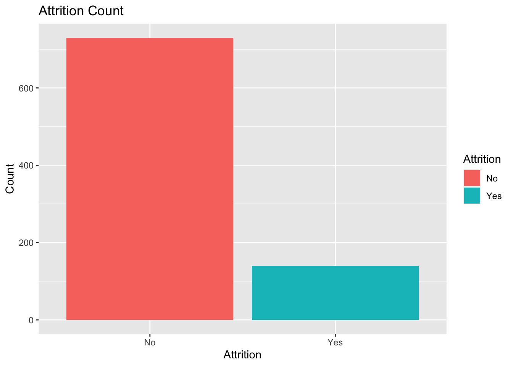
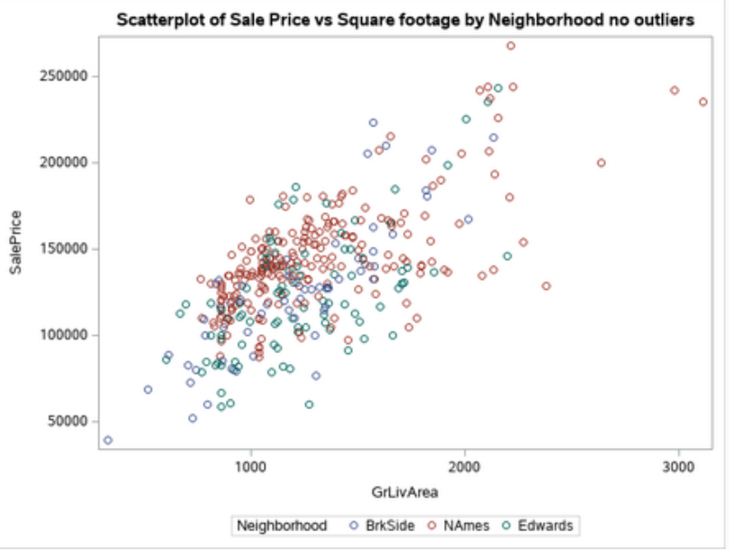
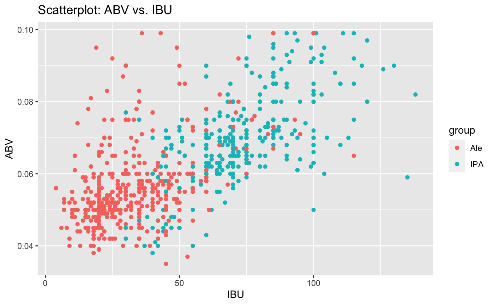
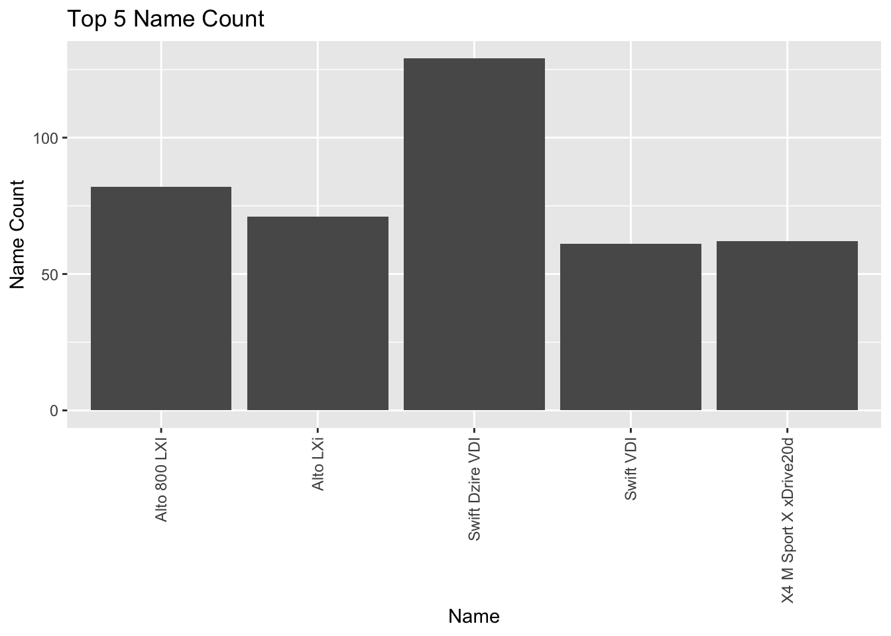
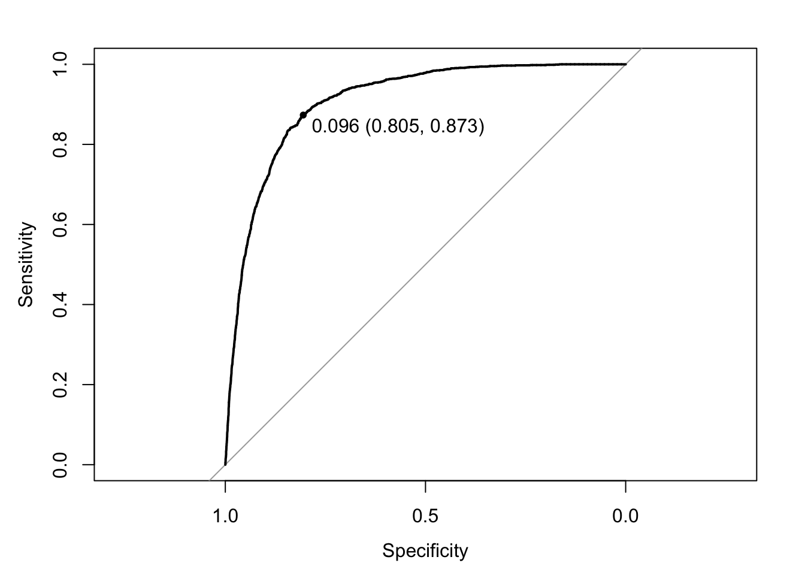

DDSAnalytics is an analytics company that specializes in talent management solutions for Fortune 100 companies.
Talent management is defined as the iterative process of developing and retaining employees. It may include workforce planning, employee training programs,
identifying high-potential employees and reducing/preventing voluntary employee turnover (attrition). To gain a competitive edge over its
competition, DDSAnalytics is planning to leverage data science for talent management. The executive leadership has identified predicting
employee turnover as its first application of data science for talent management.
PROJECT INFORMATION
In this project, I will identify the top three factors that contribute to turnover (backed up by evidence provided by analysis).
The business is also interested in learning about any job role specific trends that may exist in the data set. You can also provide
any other interesting trends and observations from your analysis. The analysis is backed up by robust experimentation and appropriate
visualization.
There are two goals to this project. First, we want to find factors that lead to attrition and determine monthly income with EDA.
Secondly , we want to build two prediction models with our chosen factors that can accurately predict both of the variables mentioned
above. Lastly, we want to use our model to predict the value of these variables on 2 different test datasets. The two models that we
found work best are the Naive-Bayes model for attrition and Linear Regression model for salary. We also tried the KNN model. Additionally,
a video presentation was also made to address our findings.
Video Presentation
R Markdown

Ask a home buyer to describe their dream house, and they probably won't begin with the height of the basement ceiling or the
proximity to an east-west railroad. But this Kaggle competition's dataset proves that much more influences price negotiations
than the number of bedrooms or the presence of a white-picket fence! With 79 explanatory variables describing (almost) every aspect
of residential homes in Ames, Iowa, this competition challenges you to predict the final price of each home. The entire process will
be done in R and SAS. SAS is used for the first analysis question and variable selection.
PROJECT INFORMATION
Analysis 1: Century 21 Ames only sells houses in the NAmes, Edwards and BrkSide neighborhoods and would like to simply get
an estimate of how the SalePrice of the house is related to the square footage of the living area of the house (GrLIvArea) and if the SalesPrice
(and its relationship to square footage) depends on which neighborhood the house is located in. Build and fit a model that will answer this question,
keeping in mind that realtors prefer to talk about living area in increments of 100 sq. ft. Provide your client with the estimate (or estimates if it v
aries by neighborhood) as well as confidence intervals for any estimate(s).
For this analysis, we also want to create to make an RShiny app that will display at least display a scatterplot of price of the home v. square
footage (GrLivArea) and allow for the plot to be displayed for at least the NAmes, Edwards and BrkSide neighborhoods separately.
Analysis 2: Build the most predictive model for sales prices of homes in all of Ames Iowa. This includes all neighborhoods.
Your group is limited to only the techniques we have learned in 6371 (no random forests or other methods we have not yet covered).
Specifically, you should produce 4 models: one from forward selection, one from backwards elimination, one from stepwise selection, and
one that you build custom. The custom model could be one of the three preceding models or one that you build by adding or subtracting variables
at your will. Generate an adjusted R-Squared, CV Press and Kaggle Score for each of these models and clearly describe which model you feel is the
best in terms of being able to predict future sale prices of homes in Ames, Iowa. We will use all 4 our models to predict the Saleprice on a test
dataset(test.csv).
In the end, we want to write a 7 page report discussing our findings along with an appendix that includes all of our codes.
Rshiny App
Report

Assume that the audience is the CEO and CFO of Budweiser (your client) and that they only have had one class in statistics
and have indicated that I cannot take more than 7 minutes of their time. They have hired you to address the 9 questions / items
Project Questions to Answer
- 1.How many breweries are present in each state?
- 2.Merge beer data with the breweries data. Print the first 6 observations and the last
six observations to check the merged file.
- 3.Address the missing values in each column.
- 4.Compute the median alcohol content and international bitterness unit for each state.
Plot a bar chart to compare.
- 5.Which state has the maximum alcoholic (ABV) beer? Which state has the most bitter (IBU) beer?
- 6.Comment on the summary statistics and distribution of the ABV variable.
- 7.Is there an apparent relationship between the bitterness of the beer and its alcoholic content? Draw a scatter plot.
Make your best judgment of a relationship and EXPLAIN your answer.
- 8.Budweiser would also like to investigate the difference with respect to IBU and ABV between IPAs (India Pale Ales) and other
types of Ale (any beer with “Ale” in its name other than IPA). You decide to use KNN classification to investigate this relationship.
Provide statistical evidence one way or the other.
- 9.Find one other useful inference from the data that you feel Budweiser may be able to find value in. You must convince them why it is
important and back up your conviction with appropriate statistical evidence
This project was done as part of the DS 6306 course at Southern Methodist Univeristy.
Video Presentation
R Markdown

In this project, we want to create a model that can best predict used car prices. Our team was tasked to identify any relationships between
the selling prices and the other variables. Our variable selection methodologies includes, but not limited to, forward selection, backward
selection, stepwise selection, etc. Since this is an observational study our conclusions are limited to the data included in our analysis.
Video Presentation
R Markdown

In this section you will build 3 additional classification models to compare to your model in objective 1. The goal of this objective is to build
a model where prediction performance is prioritized. One model should be an attempt at a complex logistic regression model including interaction terms
or polynomial terms. One model should be an LDA or QDA. And the final model should be a nonparametric model such as knn, random forest, classification tree, etc.
Video Presentation
R Markdown